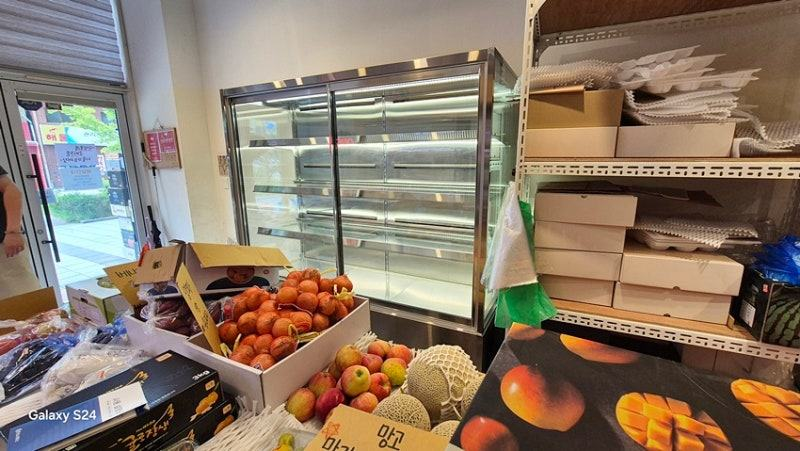
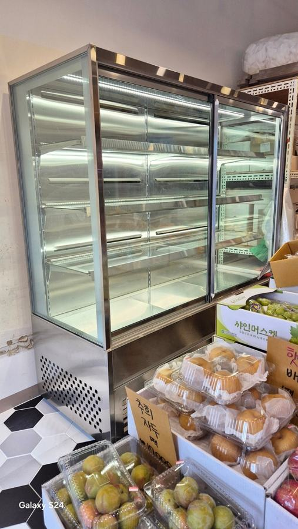
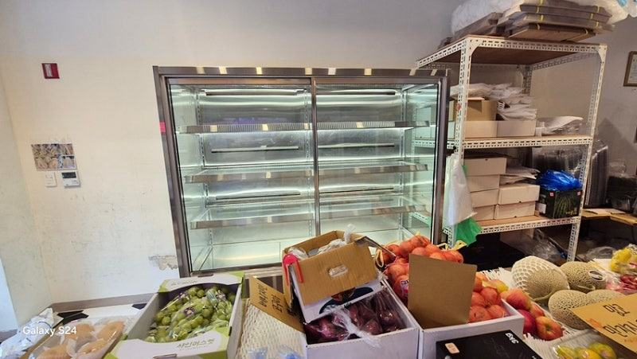
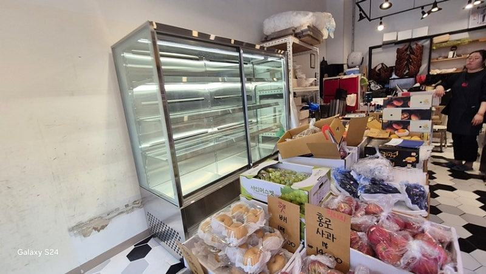
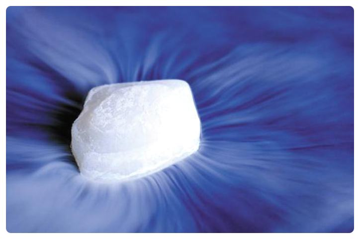
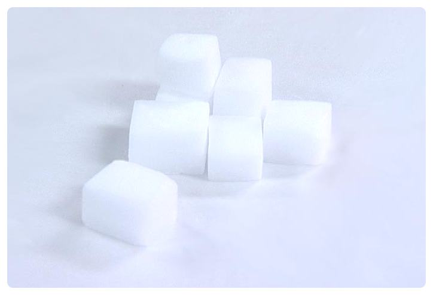

과일진열쇼케이스
과일가게 폐기 줄이는 법, 온도보다 먼저 볼 습도와 진열

과일 폐기는 온도보다 습도와 바람에서 시작되는 경우가 많습니다. 과일쇼케이스 안이 너무 습하면 표면에 물이 맺혀 무르고, 너무 건조하면 쭈글쭈글해지니, 바람이 과일에 직접 닿지 않게 하고 품목별로 칸을 나눠 진열하며 매일 상태를 골라내는 습관이 폐기를 줄이는 가장 확실한 방법입니다.
안녕하세요. 과일 가게와 청과 매장의 진열 쇼케이스를 매장에 맞춰 만드는 한성쇼케이스입니다.
과일가게 사장님들은 매일 저녁 무른 과일을 골라내며 한숨을 쉬십니다. 좋은 물건을 골라 들여왔는데 이틀 만에 복숭아 한쪽이 짓무르고, 딸기 팩 바닥에 물이 고이면 그만큼이 고스란히 손해로 남으니까요.
많은 분이 온도를 더 낮추면 해결될 거라 생각하시는데, 막상 쇼케이스 온도는 잘 유지되는데도 과일이 빨리 상하는 경우가 많습니다.
같은 온도에서도 어떤 과일은 멀쩡하고 어떤 과일은 금세 무르죠.
오늘은 과일가게 폐기를 줄이기 위해 과일쇼케이스에서 관리해야 할 습도, 바람, 진열 배치, 매일의 운영 습관을 차례로 정리해 드리겠습니다.
1. 과일은 진열 중에도 숨을 쉽니다
과일은 수확한 뒤에도 호흡을 멈추지 않습니다. 이 과정에서 안쪽 수분이 이동하고 주변 환경에 따라 조직이 빠르게 변합니다.
그래서 같은 온도라도 습도와 바람에 따라 무르는 속도가 크게 달라집니다.
습도가 지나치게 높으면 표면에 물방울이 맺혀 조직이 약해지고 곰팡이가 생기기 쉽습니다. 반대로 너무 건조하면 수분이 빠져 껍질이 쭈글쭈글해지고 윤기가 사라집니다.
손님은 물기 묻은 과일을 보면 신선도를 의심하고, 윤기 없는 과일은 오래된 물건으로 봅니다.
2. 바람이 과일에 직접 닿지 않게
쇼케이스 냉기 토출구 바로 앞에 놓인 과일은 표면이 먼저 마릅니다. 포도알이 쭈글해지거나 귤 껍질이 딱딱해지는 자리가 늘 같다면 바람길을 의심해 보세요.
토출구 앞에는 껍질이 두꺼운 과일을 두고, 딸기나 체리처럼 예민한 과일은 바람이 덜 닿는 안쪽에 두는 식으로 자리를 나눌 수 있습니다.
매장 에어컨 바람이 쇼케이스 정면으로 들어오는 것도 과일을 마르게 하고 앞쪽 결로를 키웁니다. 에어컨 날개 방향을 바꿔 보시는 것만으로도 차이가 납니다.
- 토출구 앞에는 껍질이 두꺼운 과일을 두세요.
- 예민한 과일은 바람이 덜 닿는 안쪽에 두세요.
- 에어컨 바람이 쇼케이스로 가지 않게 하세요.


3. 품목끼리 배치를 나누기
사과, 바나나처럼 익으면서 다른 과일의 숙성을 앞당기는 과일을 예민한 과일 바로 옆에 두면 주변 과일이 빨리 무릅니다.
숙성이 빠른 과일과 오래 버티는 과일을 칸을 나눠 진열해 보세요.
무거운 과일 아래에 무른 과일을 깔지 않는 것도 기본입니다. 박스째 진열할 때는 맨 아래 줄 과일이 눌려 상하기 쉬우니, 높이 쌓기보다 넓게 펼쳐 놓는 편이 폐기를 줄입니다.
4. 매일의 운영 습관
상한 과일 하나가 주변 과일을 함께 상하게 합니다. 아침 오픈 전과 마감 때 두 번 정도 진열 과일을 훑어 무른 것을 골라내 주세요.
살짝 흠이 난 과일은 컷팅이나 묶음 할인으로 먼저 돌리면 폐기 대신 판매로 이어집니다.
입고 과일은 상온에 오래 두지 말고 바로 선별해 넣고, 기존 과일을 앞으로 빼는 순서를 지켜 주세요.
마감 후 오픈형 쇼케이스에는 나이트커버를 덮어 밤사이 과일이 마르지 않게 해 주시고, 바닥 물받이와 배수구도 함께 닦아 두세요.
- 오픈 전·마감 때 무른 과일을 골라내세요.
- 흠난 과일은 컷팅·묶음으로 먼저 판매하세요.
- 마감 후 나이트커버를 덮으세요.
체크리스트
- 쇼케이스 내부 습도 상태
- 토출구 앞 과일 배치
- 에어컨 바람 방향
- 숙성 빠른 과일 분리 진열
- 하루 두 번 선별
- 나이트커버와 배수구 청소
현장에서 자주 보는 경우: 온도는 맞는데 과일이 하루 이틀 만에 무를 때
과일을 진열해 두었는데 하루 이틀 사이에 물러지거나 색이 탁해진다는 상담을 자주 받습니다. 온도 표시를 보면 잘 유지되고 있어 사장님들도 원인을 찾기 어려워하시는데, 확인해 보면 쇼케이스 안의 수분 환경이 맞지 않는 경우가 많습니다.
과습하면 표면 물기로 조직이 물러져 신선도를 의심받고, 과건조하면 수축하고 윤기가 떨어져 오래된 과일처럼 보입니다.
그래서 냉장 온도와 함께 습도와 바람의 흐름을 같이 맞추는 방향으로 관리 방법과 장비 구성을 안내해 드리고 있습니다.






자주 묻는 질문
과일쇼케이스 온도를 더 낮추면 폐기가 줄까요?
온도만 낮추면 바나나나 열대 과일처럼 냉해를 입는 품목이 생기고, 결로가 늘어 오히려 무를 수 있습니다.
품목별 적정 온도는 과일마다 다르니 칸을 나눠 관리하시는 편이 좋습니다.
과일쇼케이스 안에 물이 맺히는데 괜찮은가요?
유리나 과일 표면에 물방울이 계속 맺힌다면 과습 상태일 가능성이 큽니다. 문 여는 시간, 배수, 바람 방향을 먼저 점검해 보세요.
습도 관리가 되는 과일쇼케이스를 맞출 수 있나요?
판매 품목과 매장 환경을 알려 주시면 바람 방향과 진열 구성을 고려해 제작을 안내해 드립니다. 설치 후 A/S는 전국 240여 개 A/S 센터에서 받으실 수 있습니다.
매장 조건에 맞춰 만드는 한성쇼케이스
원하시는 제품 사진과 설치할 공간 사진만 보내 주셔도 매장에 맞는 구성을 추천해 드립니다.
- 전국 240여 개 A/S 전담 센터 운영
- 본사 대량 자재 매입으로 품질 대비 합리적인 가격
- 유럽제·삼성 냉각 콤프레셔 적용
- 국내 최초 쇼케이스 전문 디자이너 상주
매장 폭과 원하는 진열 구성을 알려 주세요. 실측과 견적을 안내해 드립니다.
031-986-2458